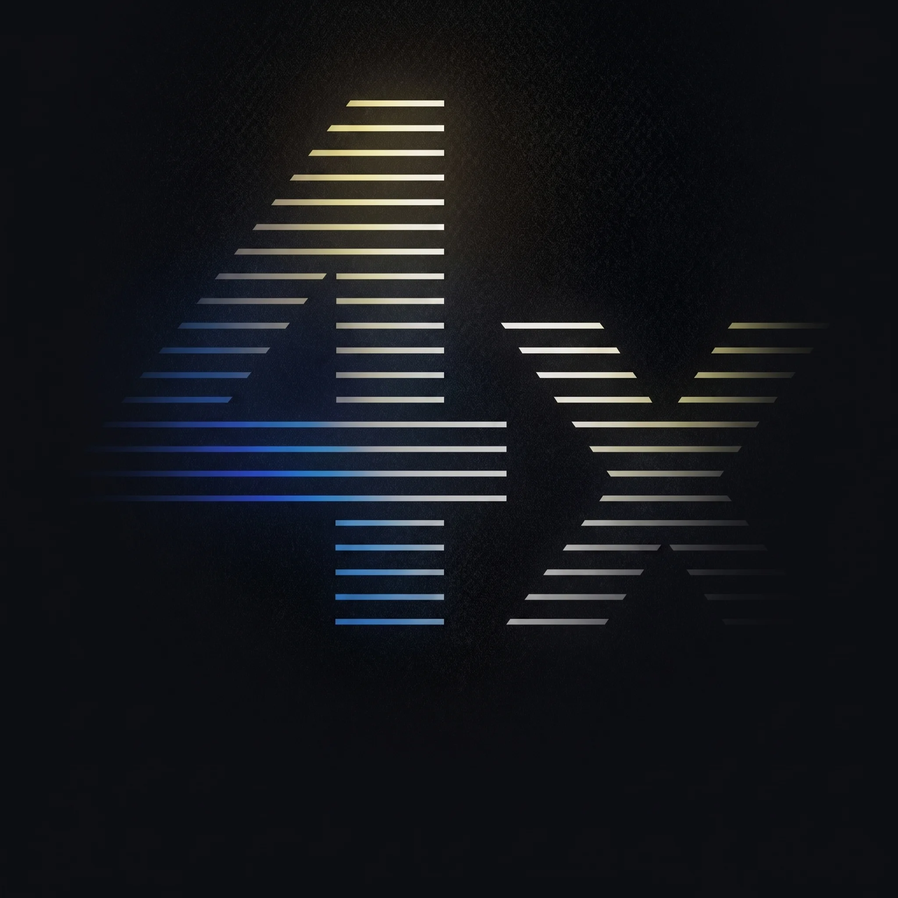
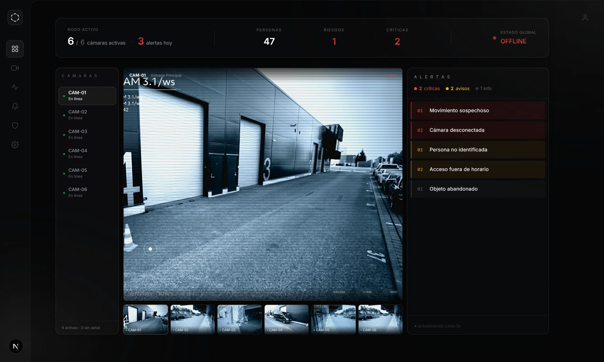
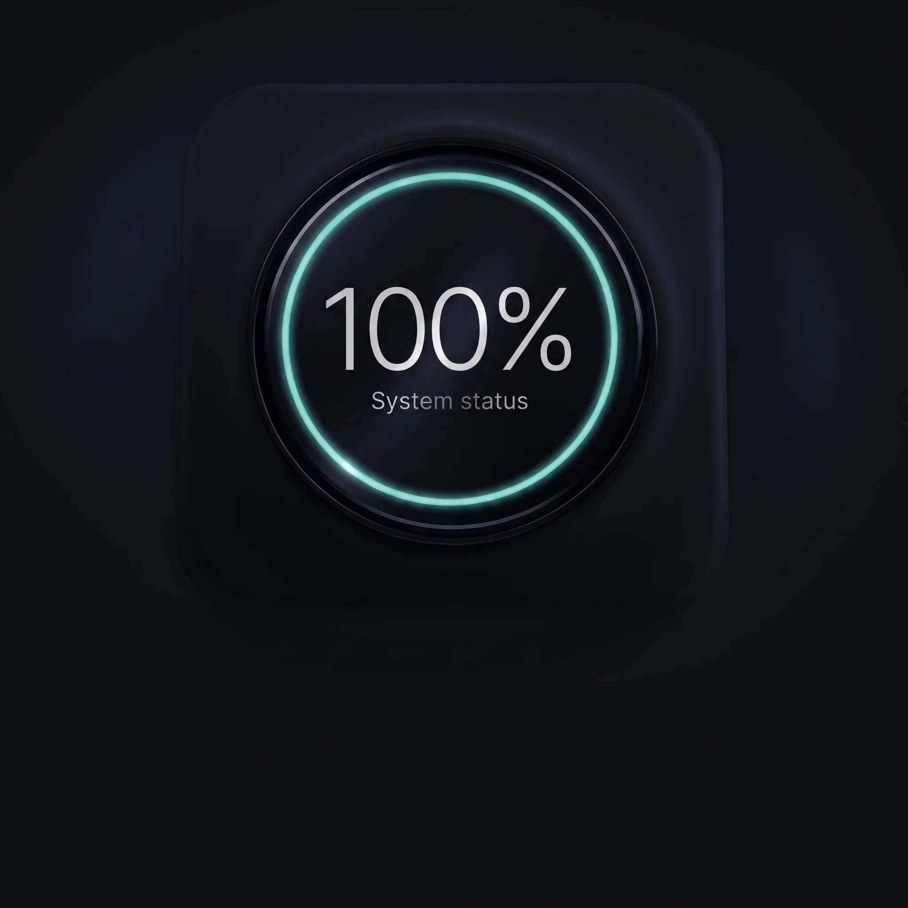
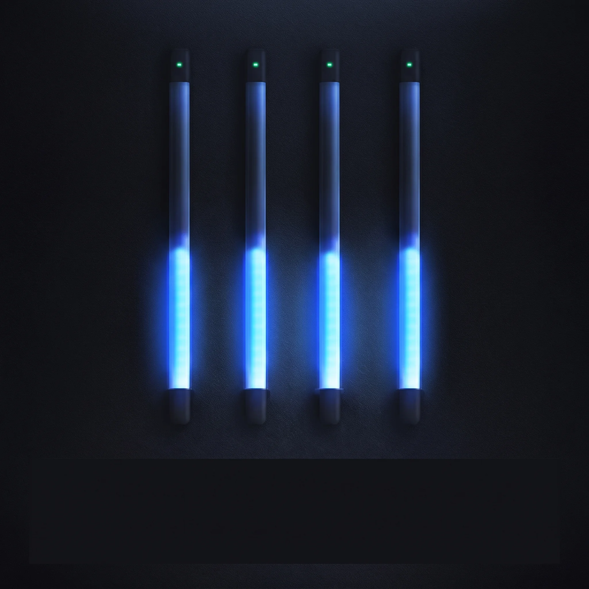
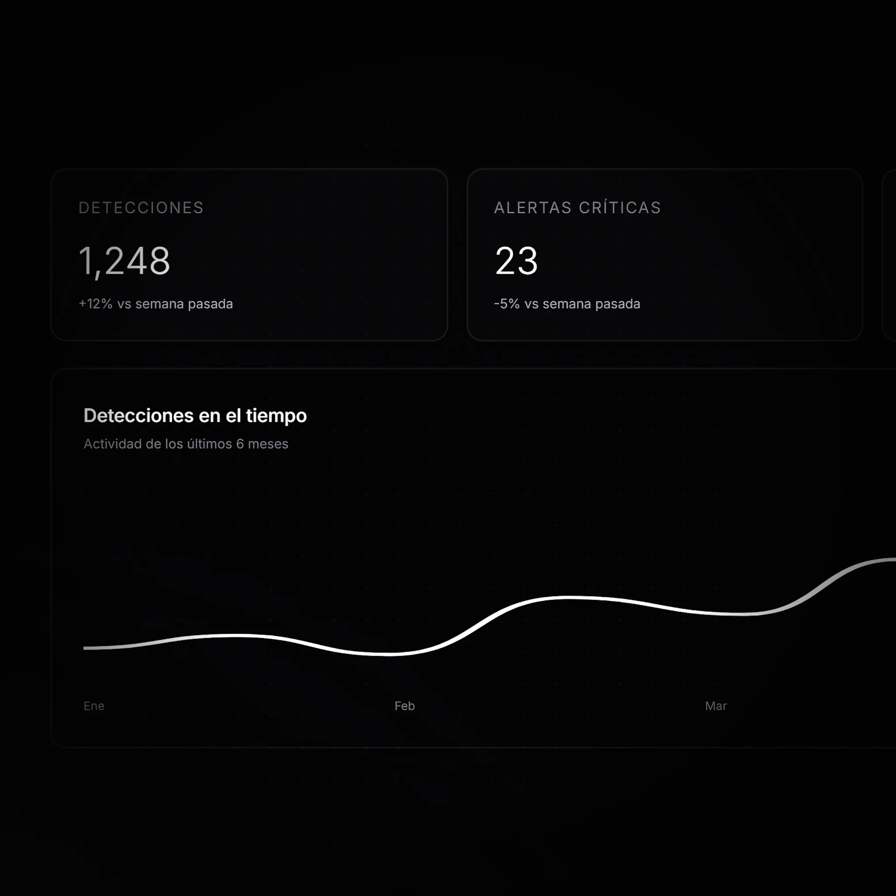
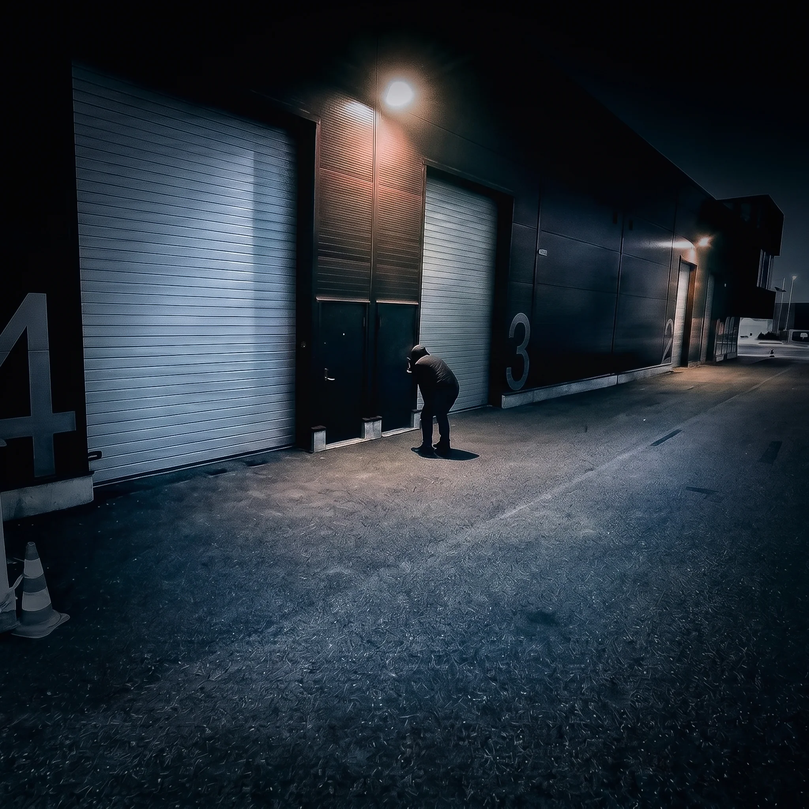
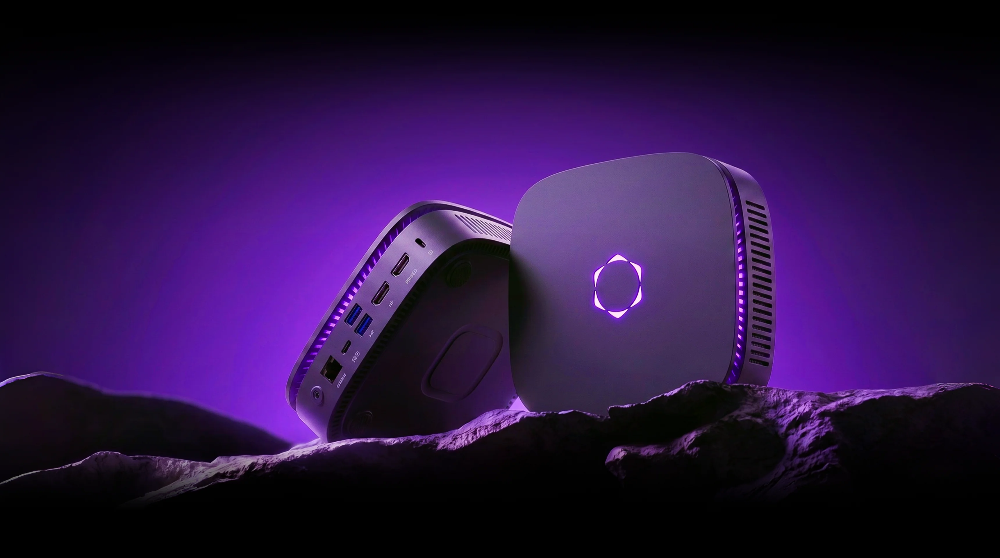

Analiza 24/7 sin pausas. Procesa cada fotograma en el Edge con YOLOv8, detectando eventos críticos apenas ocurren, sin depender de la nube.
OmniVision monitorea, analiza e interpreta el comportamiento humano ante posibles amenazas impulsado por IA
Explorar Plataforma
transformando cualquier cámara en IA con análisis en tiempo real, 100% privado y sin depender de la nube.

Analiza 24/7 sin pausas. Procesa cada fotograma en el Edge con YOLOv8, detectando eventos críticos apenas ocurren, sin depender de la nube.

100% procesado en sitio. El Vision-Box decodifica y analiza el vídeo localmente, así los datos sensibles nunca salen de tu red.

Monitorea hasta 4 canales a la vez. Cada entrada BNC del Vision-Box procesa su propio stream en paralelo, sin perder fluidez ni sincronía.

Adapta el modelo a tu operación. Cambia los parámetros de detección según el entorno: logística, seguridad o instalaciones críticas.

Ahorra ancho de banda y costos cloud. Al procesar todo en el Edge, solo se envían alertas relevantes, no vídeo constante a servidores externos.
Alertas con contexto generado por IA. Gemini LLM redacta automáticamente una descripción de cada clip detectado.
